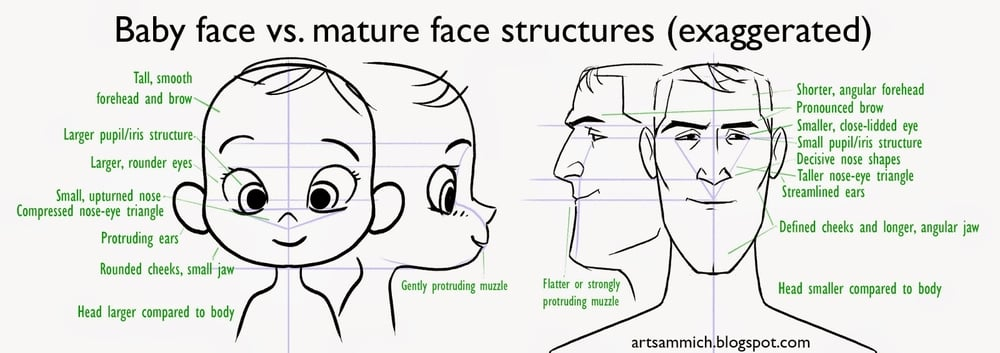

-
Or in short: "You look like a baby, you have the personality of a baby."
-
It’s usually about round features, but to be more precise: high/smooth forehead, large eyes, small/upturned nose, protruding ears, short chin, lighter skin/hair.
-
Effective when used to in commercials to pretend innocence and honesty; e.g. for personal testimonials.
-
Toy producers use this to aim their products at children (dolls and toys with huge eyes).
-
Of disadvantage though when dealing with speaking authoritatively.
-
-
The bias is found across all age ranges, cultures, and many mammalian species.
-
It is related to the attractiveness bias.

Figure 1. Using the anchoring effect to make people believe they save some money.